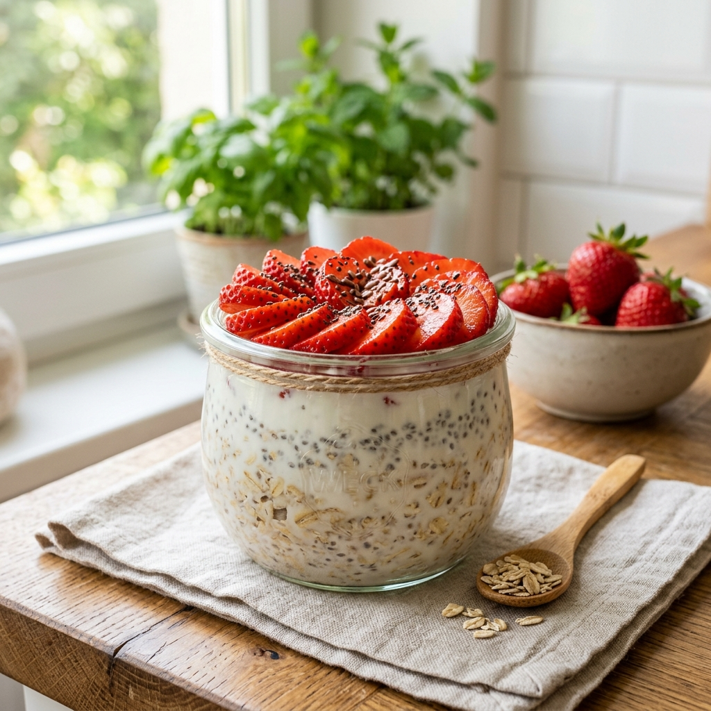

Descubre cómo integrar los probióticos vivos de tu KefiVida en tu rutina diaria. Nuestras recetas están clasificadas para potenciar tu microbiota según tus actividades del día.

Mezcla la avena, la chía, el endulzante y tu KefiVida en un frasco o recipiente de vidrio.
Tapa el frasco y déjalo reposar en el refrigerador durante toda la noche (o al menos 4 horas).
Por la mañana, revuelve bien la mezcla y añade las frutas frescas por encima antes de disfrutar.
Prepara estos deliciosos platos con el kéfir artesanal más fresco y puro del país. Tu sistema digestivo te lo agradecerá.
Pedir mi KefiVida por WhatsApp